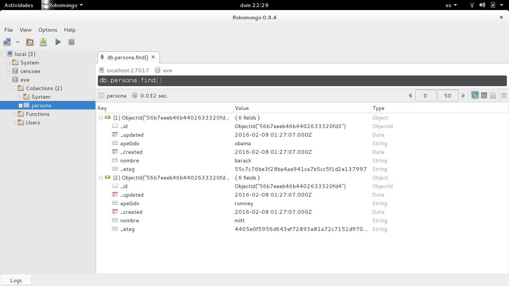
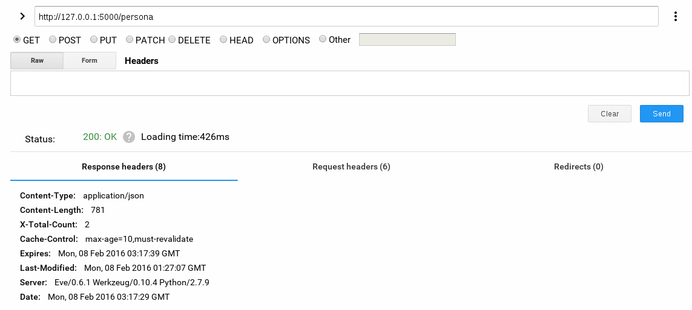
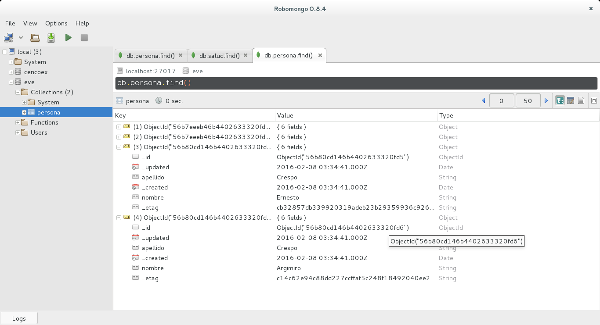

API rest ful con Eve (parte 2)
Posted on dom 07 febrero 2016 in Tutorial Python • 3 min read
En el primer artículo se tocó el tema del api rest ful con eve de manera sencilla.
En este artículo se toca el uso de mongodb para majejo del api rest con mongodb, el artículo se basa en la guía rápida de eve que se encuentra en su sitio.
Los artículos relacionados con mongodb del blog son:
Para ver la base de datos en mongodb se usará el cliente robomongo que lo pueden descargar en el siguiente enlace.
El archivo run.py contiene lo mismo que en el artículo anterior:
#!/usr/bin/env python
from eve import Eve
app = Eve()
if __name__ == '__main__':
app.run()
El archivo settings.py contendrá algunas directivas.
Configuración de la base de datos mongodb:
MONGO_HOST = 'localhost'
MONGO_PORT = 27017
#MONGO_USERNAME = 'user'
#MONGO_PASSWORD = 'user'
MONGO_DBNAME = 'eve'
Como a mongodb no se le ha configurado un usuario y clave se comentan esas líneas, la base de datos a usar se llama eve.
Configurar todas las opciones del CRUD (leer, editar, update y borrar):
# Enable reads (GET), inserts (POST) and DELETE for resources/collections
# (if you omit this line, the API will default to ['GET'] and provide
# read-only access to the endpoint).
RESOURCE_METHODS = ['GET', 'POST', 'DELETE']
# Enable reads (GET), edits (PATCH), replacements (PUT) and deletes of
# individual items (defaults to read-only item access).
ITEM_METHODS = ['GET', 'PATCH', 'PUT', 'DELETE']
Se define un esquema el cual permite validar los datos:
schema = {
# Schema definition, based on Cerberus grammar. Check the Cerberus project
# (https://github.com/nicolaiarocci/cerberus) for details.
'nombre': {
'type': 'string',
'minlength': 1,
'maxlength': 10,
},
'apellido': {
'type': 'string',
'minlength': 1,
'maxlength': 15,
'required': True,
# talk about hard constraints! For the purpose of the demo
# 'lastname' is an API entry-point, so we need it to be unique.
'unique': True,
},
# 'role' is a list, and can only contain values from 'allowed'.
'role': {
'type': 'list',
'allowed': ["author", "contributor", "copy"],
},
# An embedded 'strongly-typed' dictionary.
'localizacion': {
'type': 'dict',
'schema': {
'direccion': {'type': 'string'},
'ciudad': {'type': 'string'}
},
},
'nacimiento: {
'type': 'datetime',
},
}
Definición de persona:
persona = {
# 'title' tag used in item links. Defaults to the resource title minus
# the final, plural 's' (works fine in most cases but not for 'people')
'titulo': 'persona',
# by default the standard item entry point is defined as
# '/people/<ObjectId>'. We leave it untouched, and we also enable an
# additional read-only entry point. This way consumers can also perform
# GET requests at '/people/<lastname>'.
'additional_lookup': {
'url': 'regex("[\w]+")',
'field': 'apellido'
},
# We choose to override global cache-control directives for this resource.
'cache_control': 'max-age=10,must-revalidate',
'cache_expires': 10,
# most global settings can be overridden at resource level
'resource_methods': ['GET', 'POST'],
'schema': schema
}
Por último se define el recurso como un dominio, el recurso persona toma la definición dada anteriormente:
DOMAIN = {
'persona': persona,
}
Con robomongo se puede observar que ya se tiene dos documentos agregados a la colección persona de la base de datos eve:

Se consulta vía GET a http://127.0.0.1:500 por medio de la extensión de google chrome restclient:
Al hacer una consulta GET a http://127.0.0.1:5000/persona se tiene lo siguiente:

Desde la línea de comandos se agregará dos documentos, se usará curl para ello:
curl -d '[{"nombre": "Ernesto", "apellido": "Crespo"}, {"nombre": "Argimiro", "apellido": "Crespo"}]' -H 'Content-Type: application/json' http://127.0.0.1:5000/persona
Al ejecutar devuelve lo siguiente:
{
"_status": "OK",
"_items": [
{
"_updated": "Mon, 08 Feb 2016 03:34:41 GMT",
"_links": {
"self": {
"href": "persona/56b80cd146b4402633320fd5",
"title": "Persona"
}
},
"_created": "Mon, 08 Feb 2016 03:34:41 GMT",
"_status": "OK",
"_id": "56b80cd146b4402633320fd5",
"_etag": "cb32857db339920319adeb23b29359936c92680f"
},
{
"_updated": "Mon, 08 Feb 2016 03:34:41 GMT",
"_links": {
"self": {
"href": "persona/56b80cd146b4402633320fd6",
"title": "Persona"
}
},
"_created": "Mon, 08 Feb 2016 03:34:41 GMT",
"_status": "OK",
"_id": "56b80cd146b4402633320fd6",
"_etag": "c14c62e94c88dd227ccffaf5c248f18492040ee2"
}
]
}
Al revisar la base de datos mongodb se tiene que se insertaron dos documentos:

¡Haz tu donativo! Si te gustó el artículo puedes realizar un donativo con Bitcoin (BTC) usando la billetera digital de tu preferencia a la siguiente dirección: 17MtNybhdkA9GV3UNS6BTwPcuhjXoPrSzV
O Escaneando el código QR desde la billetera: